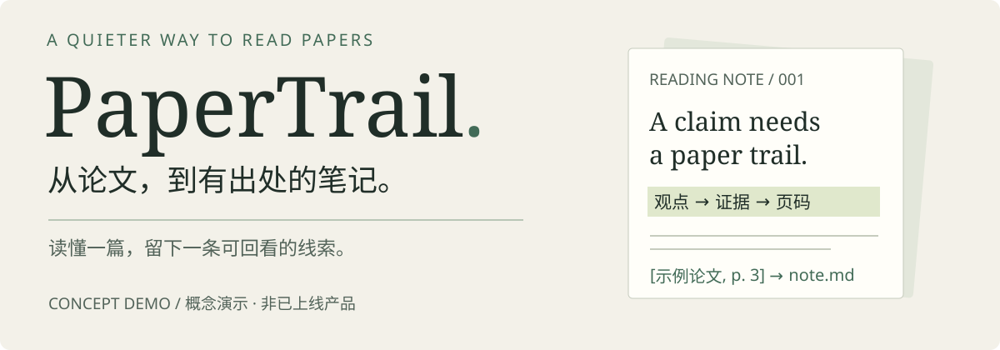
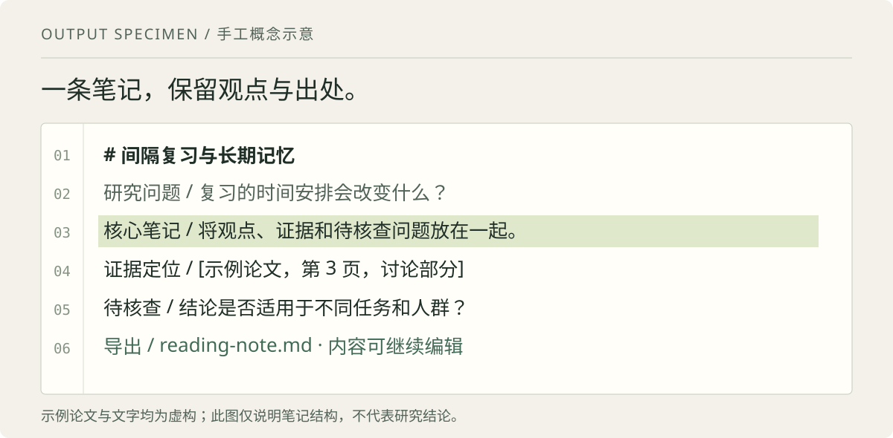

PaperTrail｜论文阅读助手
把论文中的观点、证据位置和待核查问题整理成可继续编辑的 Markdown 笔记。
概念演示项目：本目录展示 README 的设计效果，没有可运行的论文解析或 AI 服务，也没有安装包。下面是手工绘制的概念示意，不是真实产品截图。

先看一份笔记
打开 示例 Markdown 笔记，查看如何将观点和出处放在一起。所有示例论文及文字均为虚构，不代表研究结论。
- 保留上下文：记录研究问题与核心观点。
- 找到原文：为笔记附上页码和章节位置。
- 继续思考：把尚未确认的疑问留在笔记里。
设想中的阅读流程
- 导入论文：选择希望阅读的文献。
- 整理笔记：记录观点、证据位置与待核查问题。
- 导出 Markdown：保存笔记，在熟悉的编辑器中继续整理。
这是产品设想，尚未实现以上功能。本案例交付的是说明文档与视觉素材。
从这里开始
无需安装。下载本案例文件后，用文本编辑器打开 examples/reading-note.md，或打开 preview.html 查看美化后的排版。
使用边界
- 示例内容只解释笔记结构，不提供科学证据。
- 论文解析、自动摘要和引用核验未实现。
- 实际研究中，请回到原文核查引用及其适用条件。